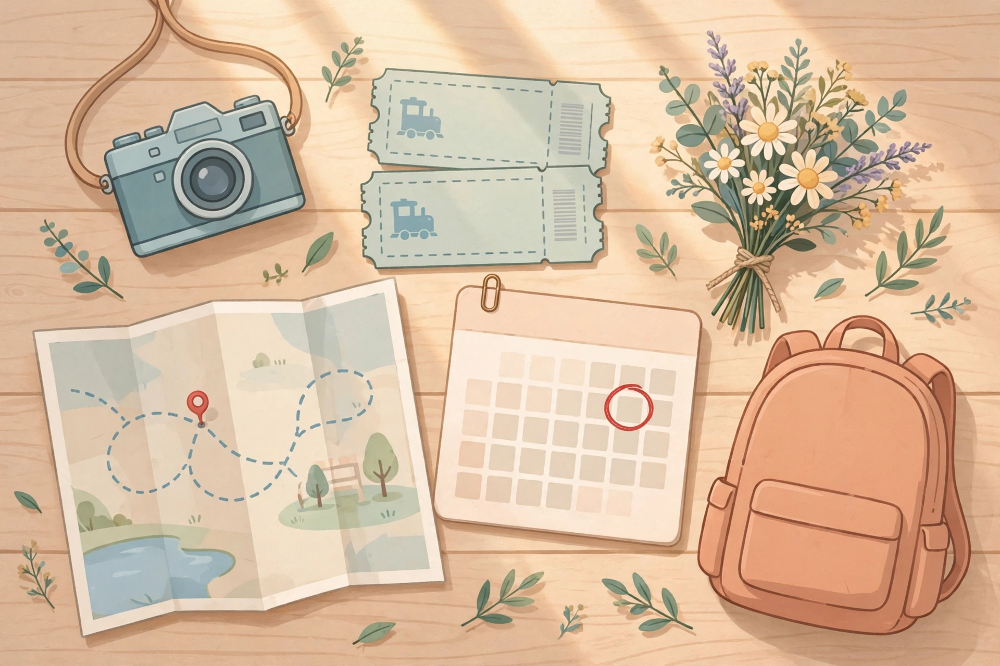

2026年11月15日｜キーワード：AI お出かけ 計画 立て方
AIにお出かけの計画を任せると、デートの行き先が3ステップで決まる
「休みが取れたけど、どこへ行こう」——行き先を決める作業は、調べるよりも迷う時間のほうが長くなりがちです。MUSE活用ラボの運営者の暮らしでは、お出かけの計画を「1から全部考える作業」から「条件を決めて、候補をもらって、選んでからカレンダーへ入れる3ステップ」へ変えています。パートナーとのデートを例に、実際に回っているお出かけ計画の流れを紹介します。
ステップ1：まず条件を決める
行き先が決まらない理由の多くは、行き先そのものではなく、条件が決まっていないことです。運営者の暮らしでは、お出かけを考えるとき、まず3つの条件を先に決めます。1つ目は「いつ行くか」。パートナーはシフト制の仕事をしているので、休みは二人のシフトを合わせて取ります。2つ目は「どこまで行くか」。日帰りで行ける関西圏が基本です。3つ目は「何を見たいか」。たとえば「今の季節の花が見頃の場所」といった、その時期ならではの目当てです。条件が決まると、探す範囲がぐっと狭まります。条件を決めずに「どこかいいところない？」と聞くと、候補が広がりすぎて、かえって選べなくなります。
ステップ2：候補は「選ぶため」にもらう
条件が決まったら、次は候補をもらいます。運営者の暮らしでは、毎月25日ごろに、翌月に見頃を迎える関西・日帰り圏の花をAIに調べてもらい、デートの候補として受け取る仕組みが回っています。候補は「決めるため」ではなく「選ぶため」にもらう、というのが決まりです。候補が届いたら、その中から気になるものを運営者が自分で選びます。選ぶまではカレンダーに入れません。先に予定を入れてしまうと、行きたくない場所へ行くことになってしまうからです。大きな旅も同じ流れです。たとえば2027年10月に見に行きたい「米子城跡からのダイヤモンド大山」は、中心の日を10月22日、予備の日を10月23日・24日として、旅程をカレンダーに入れています。行き先を決めてから日程を押さえる、という順番を守ると、あとから「あの日は行けなかった」となりにくくなります。
ステップ3：行き先が決まったら、カレンダーに「中身」を足す
行き先が決まったら、最後にカレンダーへ「中身」を足します。運営者の暮らしでは、行き先が決まったお出かけのカレンダーには、見るもの・近くで食べられるもの・道順・気をつけることを書き添える決まりにしています。たとえば花の見頃の場所なら、見頃の時期と開花の様子、最寄り駅からの行き方、混みやすい時間帯を一緒に書いておきます。カレンダーに予定だけ入れておくと、当日になって「何時に出ればいいんだっけ」と調べ直すことになります。行く前に必要な情報をひとまとめにしておくと、当日は「見ること」と「楽しむこと」に集中できます。予定を入れる作業と、情報を集める作業は、別々のタイミングでやるのではなく、行き先が決まったその場で一緒に済ませるのが続けやすいやり方です。
お出かけ計画の頼み方（そのまま使える形）
お出かけの計画を頼むときは、条件を一文にまとめて渡します。下の頼み方を、そのままコピペして使えます。
来月のデートの行き先を3つ提案してください。条件は次のとおりです。日程はパートナーの休みに合わせます（シフト制のため、休みの日はあとで伝えます）。場所は関西で日帰りできる範囲。目当ては来月に見頃を迎える花で、デートに向く場所を優先してください。各候補について、見頃の時期、最寄り駅からの行き方、混みやすい時間帯、近くで食べられるものを一緒に教えてください。決めるのはこちらで行うので、候補は選べる形で並べてください。
最初は「来月の花の見頃」といった1つの目当てから始めて、慣れてきたら「移住イベント」や「期間限定の展示」など、別の目当ても同じ頼み方で回してみてください。条件を決める・候補をもらって選ぶ・決まったらカレンダーに中身を足す。この3ステップが回り始めると、「どこへ行こう」の迷いがぐっと短くなります。
この記事のお出かけ計画の調べものは、探偵みゅうの「見張りと調べもの」の仕組みの中で回っています。花の見頃の見守りや新刊の発売日の見張りも、探偵みゅうのページで紹介しています。
入力場所は Instagram の固定投稿で案内しています